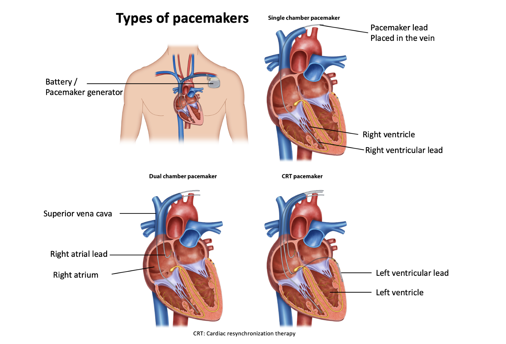
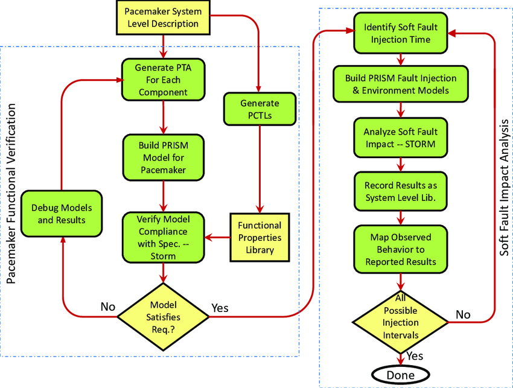

1. Evolution and Types of Pacemakers
Cardiac pacemakers have evolved from bulky external devices to today’s compact, implantable technologies. Early pacemakers required constant external power, while modern models use long-life lithium batteries and advanced circuitry.
Evolution of Pacemakers
- 1930s–1940s: Early Experiments – First artificial pacing attempts were external, bulky devices delivering shocks through electrodes placed on the chest. In 1932, Dr. Albert Hyman introduced the term “artificial pacemaker” with his hand-cranked external device.
- 1950s: First Implantable Pacemakers – In 1958, the first fully implantable pacemaker was developed by Rune Elmqvist and Åke Senning in Sweden, implanted in a patient with heart block. Early devices were powered by rechargeable nickel-cadmium batteries, requiring frequent recharging.
- 1960s–1970s: Battery and Circuit Improvements – Introduction of mercury-zinc and lithium-iodide batteries extended lifespan. Transistor technology reduced device size.
- 1980s–1990s: Programmable and Dual-Chamber Devices – Microprocessors enabled programmable settings. Dual-chamber pacemakers paced both atria and ventricles, improving cardiac synchronization.
- 2000s–present: Advanced and Leadless Pacemakers – Rate-responsive pacemakers adjust heart rate based on physical activity. Leadless pacemakers, such as Medtronic Micra, eliminate the need for leads, reducing complications. MRI-compatible pacemakers allow safe imaging.
Types of Pacemakers
- Single-Chamber Pacemaker: Contains one lead placed in either the right atrium or right ventricle.
- Use Case: Suitable for patients with atrial fibrillation with slow ventricular response or sinus node dysfunction.
- Pros: Simple implantation. Fewer complications.
- Cons: Limited ability to maintain atrioventricular (AV) synchrony.
- Dual-Chamber Pacemaker: Has two leads—one in the right atrium and one in the right ventricle.
- Use Case: Used in patients with AV block or sick sinus syndrome.
- Pros: Maintains AV synchrony, improving cardiac efficiency. Reduces risk of atrial fibrillation.
- Cons: Slightly more complex surgery. Higher chance of lead-related complications.

2. Electrical Safety in Pacemaker Use
Electrical safety is crucial to prevent device malfunction or patient injury. Pacemakers use hermetically sealed titanium casings for insulation, protection from body fluids, and electromagnetic interference (EMI) shielding. Safety features include:
- Low Leakage Currents: Minimizes risk of electric shock.
- EMI Protection: Shields from external electromagnetic fields (e.g., MRI machines, cell phones).
- Battery and Lead Monitoring: Alerts when battery depletion or lead fracture occurs.
- Lead Insulation: Pacemaker leads are insulated to prevent current leakage and reduce the risk of tissue burns or unintended stimulation.
- Output Voltage and Current Control: Pacemakers deliver very small electrical impulses (typically 1–5 volts) with carefully controlled pulse width and amplitude to stimulate heart muscle safely.
- Sensing and Inhibition: The device senses intrinsic heart activity; if a natural beat is detected, it inhibits its own output to avoid competing electrical signals.
- Protection Against Electromagnetic Interference (EMI): Devices have shielding and filters to protect against EMI from mobile phones, MRI, electrical equipment, and surgical instruments like electrocautery.
- Battery Monitoring and End-of-Life Indication: Modern pacemakers continuously monitor battery status and alert clinicians before battery depletion.
- Grounding and Isolation: Pacemaker programming devices and hospital equipment use isolated circuits to avoid delivering dangerous currents through the patient.
3. Regulatory and Safety Standards
Pacemakers must meet strict international standards to ensure safety, efficacy, and biocompatibility:
🔹 Regulatory Authorities
- FDA (U.S.): Classifies pacemakers as Class III devices, requiring premarket approval (PMA).
- CE Mark (Europe): Devices must comply with Medical Device Regulation (MDR) for safety and performance.
- ISO Standards: International benchmarks for manufacturing and safety.
🔹 Key Safety Standards
- ISO 14708: Specifies performance requirements, tests, and safety for implantable cardiac pacemakers.
- IEC 60601-1: General standard for medical electrical equipment safety.
- AAMI/ANSI Standards: U.S. performance and testing guidelines, often aligned with international norms.
🔹 Documentation and Traceability
- Design and Manufacturing Records: Manufacturers must maintain detailed design, manufacturing, and testing records.
- Unique Device Identification (UDI): Ensures traceability from factory to patient.
🔹 Post-market Surveillance
- Companies and health authorities monitor devices after release for adverse events, recalls, or improvements.
4. Safety Testing and Validation
Before release, pacemakers undergo rigorous testing:
- Design Verification Testing: Confirms the design meets specified requirements. Includes electrical output tests, battery longevity tests, and mechanical stress testing.
- Biocompatibility Testing: Ensures materials used are non-toxic, non-carcinogenic, and do not trigger immune reactions.
- Electromagnetic Compatibility (EMC) Testing: Checks resilience to external electromagnetic fields and ensures no harmful emissions.
- Accelerated Life Testing: Simulates long-term use in a shorter period to predict lifespan and identify potential failures.
- Sterilization Validation: Confirms the device can withstand sterilization processes (for leaded systems) without damage.
- Final Product Testing: 100% of manufactured pacemakers undergo individual functional testing before packaging.
- Clinical Validation: Performed through carefully controlled human studies (IDE trials under FDA, CE clinical investigations) to ensure efficacy and safety in real patients.
- Software Validation: If the pacemaker contains software, rigorous testing under IEC 62304 guidelines is conducted to verify algorithm accuracy and reliability.

5. Video: Understanding Pacemakers
Watch this video to gain a deeper understanding of how pacemakers work and their impact on patients' lives: